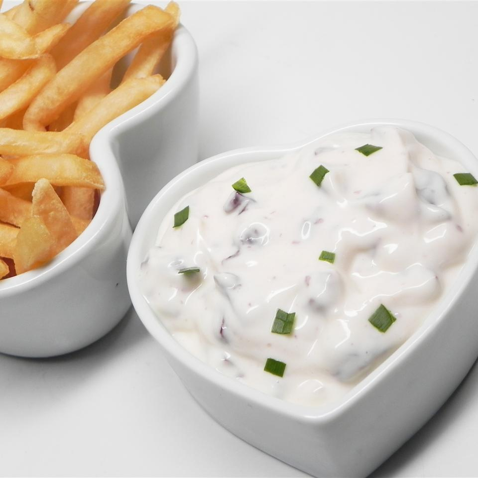

Easy Aioli
Go Back

Description
Easy aioli is the perfect complement to a weekday fish. Goes great with crab cakes, fish sticks, and french fries! From casual to company, no one will know how easy it was.
Ingredients
- 1/3 cup mayonnaise
- 10 marinated and pitted kalamata olives, chopped
- 2 tablespoons olive marinade from the jar
Steps
- Pit and finely chop the kalamata olives.
- Mix mayonnaise and kalamata olives in a bowl.
- Thin mixture with olive marinade to desired consistency.
- Finish it off with salt and pepper to taste.